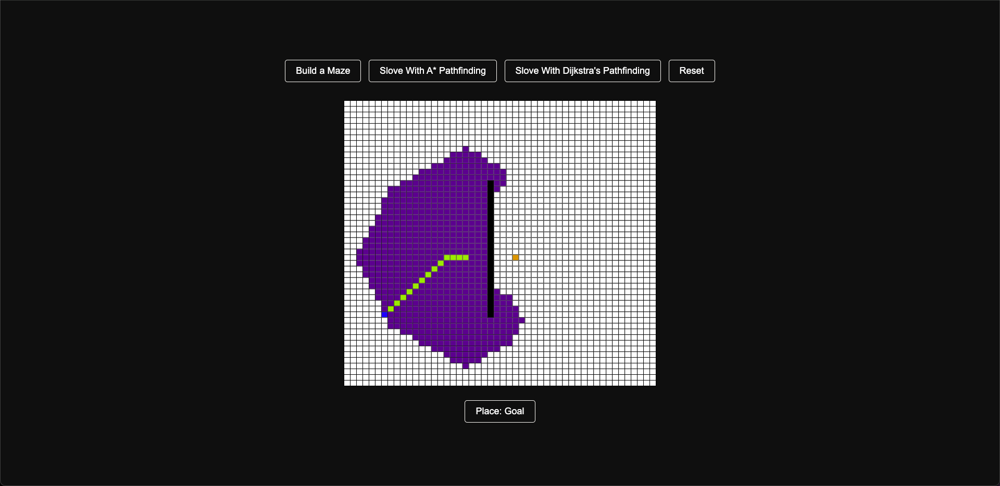
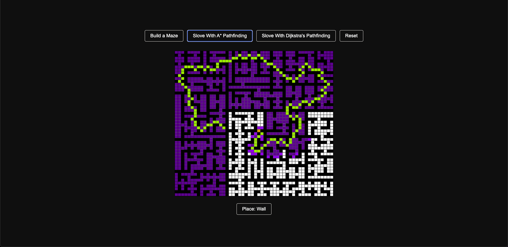
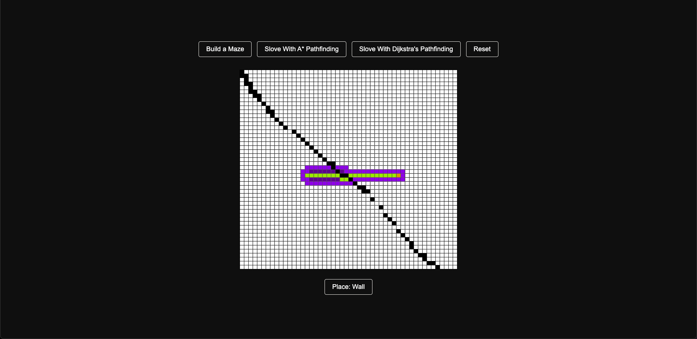

←
Pathfinding Hands-on

When I first started coding in high school, this project was a dream of mine to create.
I had seen others do similar things online, and I wanted to recreate it. I followed coding
tutorials to build each algorithm and ended up with a result I was proud of at the time.
This project won’t blow you away by any means, but it’s one of my favorites because I learned
so much—not just about coding, but also about the difference between good and bad coding practices.
It serves as a reminder of my humble beginnings and what made me fall in love with coding.


